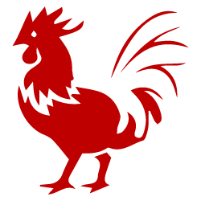

MAIN PAGE

The Rooster is tenth of the 12 animals in the Chinese zodiac cycle.
- Lucky Colors: gold, brown, and yellow
- Lucky Numbers: 5, 7, and 8
- Lucky Flowers: gladiola, cockscomb
- Year of Birth: 1933, 1945, 1957, 1969, 1981, 1993, 2005, 2017, and 2029
The Rooster's Personality: Observant, Hardworking...
People born in a year of the Rooster are very observant. Hardworking, resourceful, courageous, and talented, Roosters are very confident in themselves.
Roosters are always active, amusing, and popular within a crowd. Roosters are talkative, outspoken, frank, open, honest, and loyal individuals. They like to be the center of attention and always appear attractive and beautiful.
Roosters are happiest when they are surrounded by others, whether at a party or just a social gathering. They enjoy the spotlight and will exhibit their charm on any occasion.